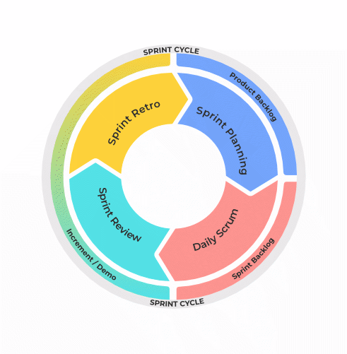

O Scrum é um framework de gerenciamento que as equipes usam para se auto-organizar e trabalhar em direção a um objetivo em comum. A estrutura descreve um conjunto de reuniões, ferramentas e funções para uma entrega eficiente de projetos.

Uma sprint é uma reunião de pessoas envolvidas num projeto para promover um desenvolvimento mais focalizado do projeto. O termo está fortemente relacionado ao framework de desenvolvimento ágil Scrum. Sprints normalmente têm duração de uma a quatro semanas.